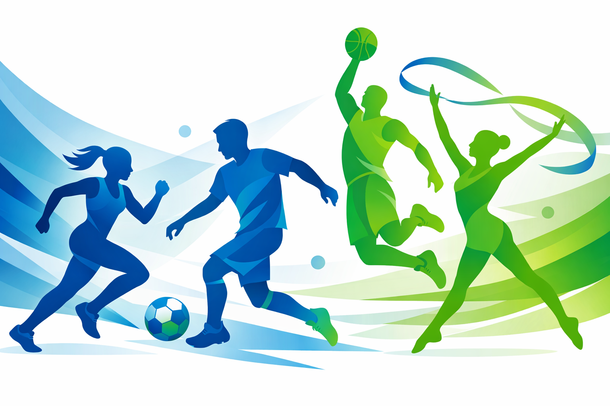

Der KreisSportBund Holzminden stärkt Vereine, Ehrenamt und Integration im Landkreis. Unser Förderassistent hilft Ihnen, passende Programme zu finden.
Förderung entdecken
Wir sind der KreisSportBund Holzminden – eine gemeinnützige Vereinigung von über 160 Sportvereinen mit rund 29 000 Mitgliedern. Wir vertreten die Interessen der Vereine, fördern Sportangebote und Jugendarbeit und beraten rund um Entwicklung, Digitalisierung und Integration.
Von der Mitgliedergewinnung bis zur Digitalisierung bieten wir Workshops, Beratung und Fördermöglichkeiten.
Wir unterstützen Projekte, die Menschen unterschiedlicher Herkunft zusammenbringen und Teilhabe ermöglichen.
Ob Sportjugend, Bildung oder Prävention – wir fördern Angebote, die Bewegung und Gesundheit stärken.
Nutzen Sie unseren Förderassistenten, um das passende Programm für Ihr Projekt zu finden. Geben Sie ein paar Eckdaten ein und erhalten Sie sofort eine Auswahl an Fördermöglichkeiten.
Kontakt aufnehmenHaben Sie Fragen oder möchten Sie persönlich beraten werden? Unsere Geschäftsstelle hilft Ihnen gern weiter.